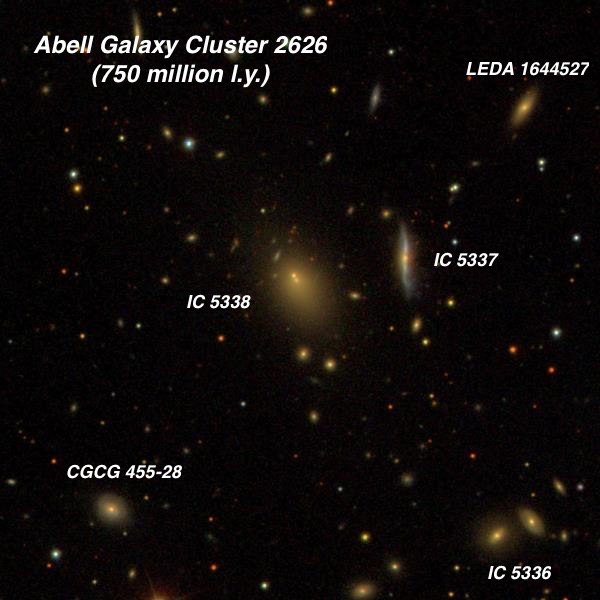
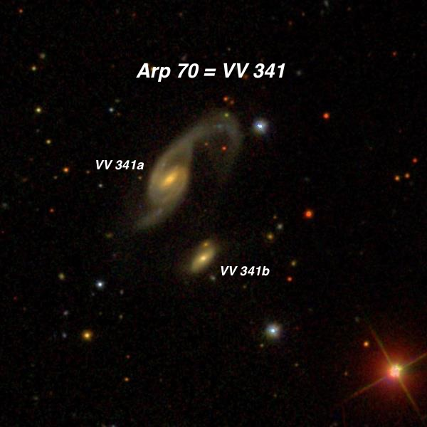
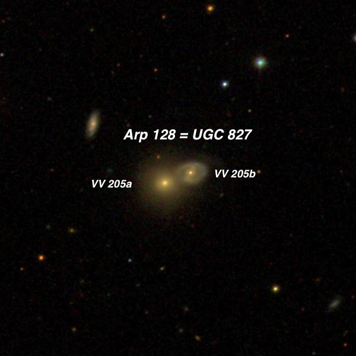
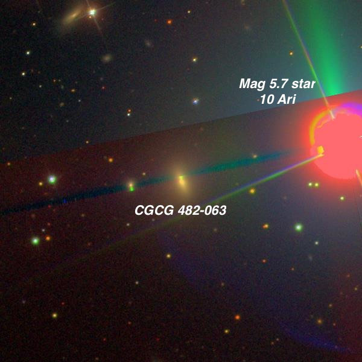
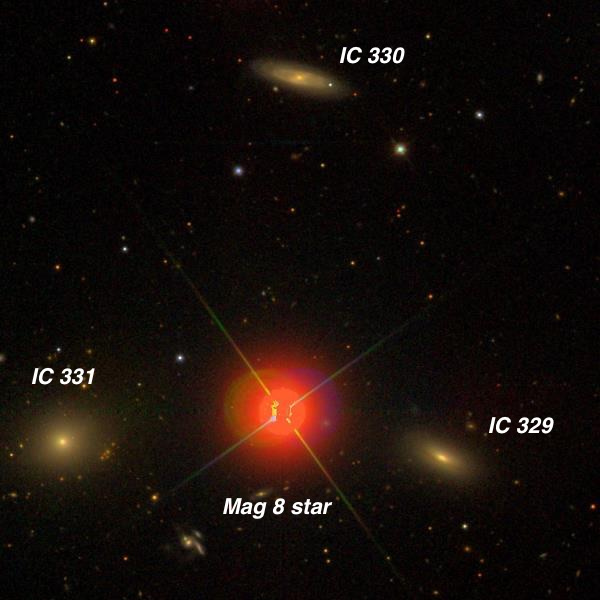
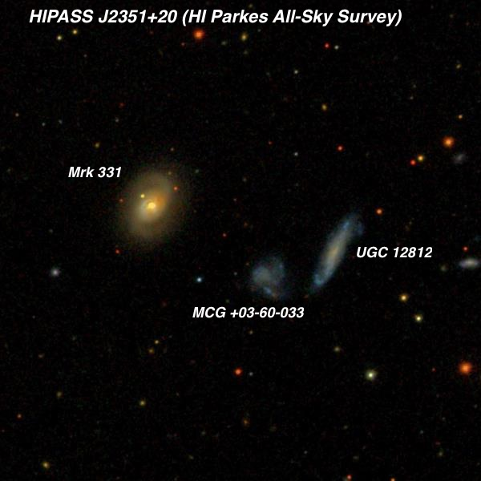
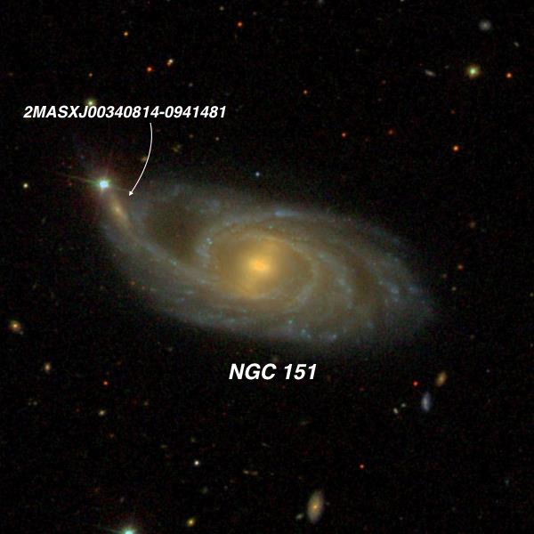
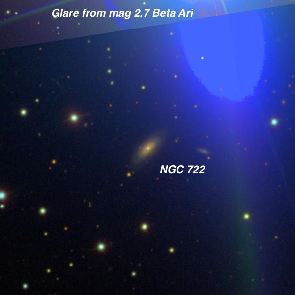
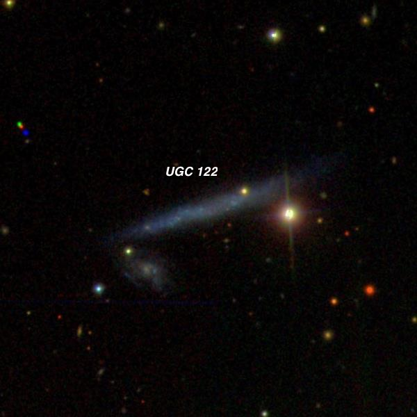

OR: Galaxies both near and far on Dec 1, 2016
On Thursday night, December 1, I met with friends Dennis Beckley and Carter Scholz at Lake Sonoma, our “close-by” observing spot in the rural Sonoma County vineyards, about an hour and half drive from my house in the San Francisco east bay area. Carter was eager to have first light with his new 16-inch Zambuto mirror and Dennis had to check out his new Greg Blandin Cross Bow Platform on his 18-inch Obsession. Observing this time of year often comes with some compromise in terms of conditions. We were fortunate to have clear skies, pretty good transparency, dry conditions (relatively low humidity) and no wind. But seeing was subpar due to the jet stream and that restricted high power viewing.
Our first target for the night was the insane outburst of Blazar CTA 102, a quasar with a redshift of 1.037, implying a light-travel time of nearly 8 billion years. This quasar has a normal quiescent brightness of 17th magnitude but it is known to go into outburst — so it is classified as an Optically Violent Variable (OVV) quasar. It’s in the midst of a historically bright outburst — as super-heated material spiral into the accretion disc surrounding the black hole, an intense magnetic field produces high-energy, relativistic plasma jets. That jet happens to be pointed directly at us, so we are looking down the throat of the jet! CTA 102 appeared marginally brighter than a mag 12.9 star on the AAVSO chart, so perhaps magnitude 12.7 or 12.8. To see an object so relatively bright, whose light has been traveling some 8 billion years to reach us, is humbling.
A galaxy, NGC 7305 , lies less than 6’ from the quasar. It was easily seen as a fairly faint, 24” spot with a small bright core and diffuse halo. At a distance of 360 million light years, this is not a nearby galaxy but still 22 times closer than the quasar. It’s nice to get started observing so early this time. By midnight I had observed already 5 hours and had logged 40 objects. Here are some of my favorites.
— Steve Gottlieb

Abell Galaxy Cluster (AGC) 2626 23 36 30.3 +21 08 33
The 5 brightest members in the central region of AGC 2626 were viewed including IC 5336 , 5337 and 5338. This cluster lies in Pegasus at a redshift-based distance of nearly 750 million light years!
IC 5338 is the brightest and largest cluster member (cD class) in AGC 2626 and it forms a close pair with IC 5337 , the second ranked member, just 1.3' W. I logged IC 5338 as fairly faint, fairly small, round, 0.4' diameter, with a small brighter core/nucleus and a low surface brightness halo. IC 5537 appeared fairly faint, small, 20" diameter. This is an edge-on with a length of 0.8', so I must have picked up only the middle section but it was comparable in surface brightness to the bright core of IC 5338. Fainter IC 5336 (a close double system) lies 3.8' SW. It was easily the dimmest of these three and seen only with averted vision as a very small, possibly elongated glow, 15" diameter. This is a double system, but only one component was seen with confidence. CGCG 455-028 was picked up 3.5’ SE of IC 5338 and noted as very faint, round, 12"-15" diameter, slightly brighter nucleus, low surface brightness. A mag 12.7 star lies 1.3' SSW. Finally, LEDA 1644527 was a tiny 10” knot 3.3' NW of IC 5338.

Arp 70 = VV 341 01 23 28.3 +30 47 04 V = 14.3; Size 1.7'x0.6'; PA = 120°
Using 375x (about the highest power the seeing would allow), the brighter distorted spiral in Arp 70 appeared fairly faint, elongated 5:3 NW-SE, ~30"x18", broad concentration to center, no distinct nucleus. It forms a close pair with VV 341b 0.8' SW. The companion appeared very faint, very small, slightly elongated 12"x9". Once identified, it could be held continuously.
Although Arp classified this system as a "Spiral with a small high surface brightness companion on arm", the stretched (tidal) northern arm of UGC 934 , which hooks south towards VV 341b does not appear to reach the small galaxy.

Arp 128 = VV 205 = UGC 827 01 17 28.7 +14 42 12 Mag 15.4V + Mag 14.6V Size: 0.6’x0.45’ + 0.6’x0.6’
Arp 128 is a close pair of overlapping and probably interacting galaxies. Arp placed this pair in his classification group of "Elliptical and elliptical-like galaxies, close to and perturbing spirals.” At 260x they were merged into a very faint glow elongated ~WNW-ESE, ~25"x15”. At 375x the glow occasionally "resolved" into two clumps, either connected or within a common halo. The 15" eastern clump was brighter and the 10" western component was extremely faint. A 12" pair of mag 14/14.5 stars is 2.7' S and a mag 13.7 star is 2.4' NE.

CGCG 482-063 = PGC 7857 02 03 51.5 +25 55 31 Size 0.9'x0.7'; PA = 24d
Oh my, this galaxy is nearly lost in the glare of 5.7-magnitude 10 Arietis. The first challenge is to split the bright star. It’s a mag 5.8/7.9 pair at 1.2”. With a two magnitude difference in brightness it’s a bit tough. But I split it at 280x using an 8" mask on my scope. The galaxy, though, required full aperture!
Using 225x and 260x it was visible as a fairly faint, round glow, ~20" diameter. Although the surface brightness is surprisingly high, the view was improved with the glare of the star just outside the field, though the galaxy could still be easily seen with the bright star in the field.

WBL 102 = IC 329/330/331 triplet 03 32 02.9 +00 18 07 Mag 14.3V, 14.4V, 13.8V Size: 0.9’x0.4’, 1.0’x0.3’, 0.9’x0.9'
There’s nothing special individually about these three IC galaxies in southwestern Taurus, a region you wouldn’t normally go galaxy hunting. But check out the arrangement surrounding the 8th magnitude star! Quite unique and perhaps worthy of a nickname. The triplet was discovered French astronomer Stephane Javelle in 1891 while hunting for “nebulae” with the 30-inch refractor at the Nice Observatory.
IC 329 was fairly faint, slightly elongated, perhaps 20"x15”. This one is situated 2' WSW of mag 8.3 HD 21926 . IC 331 is fairly similar and lies 2.6’ E of the star – fairly faint, round, very small bright nucleus. Finally IC 330 , 3.9’ N of the star, is fairly faint, very elongated WSW-ENE, 30"x10", small brighter core. A mag 11.8 star is 1.4' NNE.

Markarian 331 (part of the HIPASS J2351+20 triplet) 23 51 26.8 +20 35 10 V = 13.9; Size 0.7'x0.4'; Surf Br = 12.4; PA = 146°
HIPASS J2351+20 (radio survey designation) is an interacting triplet featuring Markarian (Mrk) 331. Mark 331 is a far infrared (FIR) luminous galaxy with an H II-like optical spectrum. NED classifies it as a LIRG — that’s a Luminous Infrared Galaxy. A LIRG emits one hundred billion times more far-infrared light than our sun does across the entire spectrum. Apparently the huge infrared emission is from starburst activity, perhaps from the interaction.
Mrk 331 appeared moderately bright, compact, slightly elongated NW-SE, ~0.4'x0.3', small bright nucleus, with a fairly high surface brightness. Much fainter UGC 12812 lies 2’ SW and required careful averted to glimpse. It was seen as extremely faint, fairly small, elongated 3:1 NNW-SSE, very low even surface brightness.

NGC 151 00 34 02.5 -09 42 20 V = 11.6; Size 3.7'x1.7'; Surf Br = 13.4; PA = 75°
This photogenic spiral in Cetus was discovered by William Herschel in 1785 with his workhorse 18.7” speculum reflector. His notes read "pB, L, lE, lbM”, which translates to “pretty bright, large, little elongated, little brighter in the middle.” The Carnegie Atlas of Galaxies describes the photographic appearance as follows: "The beautifully symmetrical grand design in the pattern of NGC 151 contains a smooth central bar which terminates at the place where two inner arms begin. The arms do not spring from the ends of the bar but start from two symmetrically placed points about 15° downstream from the termination of the bar - a common-enough feature...The two principal arms that start at these places relative to the bar, fragment as they move outward and form the multiple-arm pattern in which at least four arm segments can be traced on each side of the galaxy.” Distance measurements place this galaxy at 150 million l.y.
Through my 24”, NGC 151 appeared bright, fairly large, with a very bright boxy rectangular central section that is slightly elongated NNW-SSE (this is the central bar and nucleus), encased by a fairly low surface brightness halo extended at least 2:1 E-W, ~2.7'x1.2'. A mag 12.5 star is at or just off the ENE edge (1.7' from center). A superimposed companion (with the 2MASX designation) is at the tip of the eastern spiral arm of the galaxy, very close southwest of the mag 12.5 star. It was marginally glimpsed but occasionally popped.

NGC 722 01 54 47.1 +20 41 54 V = 13.5; Size 1.7'x0.5'; Surf Br = 13.2; PA = 138°
NGC 722 lies a mere 7' SSE from the glare of 2.7-magnitude Beta Aries! This is a very similar situation as NGC 404 (“The Ghost of Mirach”) located 7’ from mag 2.1 Beta Andromeda. But NGC 404 is magnitude 10.3V, while NGC 722 is magnitude 13.5V, so it’s a much tougher target!!
It was picked up immediately, though, as a fairly faint glow, elongated 3:2 NW-SE, ~30"x20", with a slightly brighter nucleus. A group of mag 11.5-13 stars is nearby, including a mag 12 star 2.7' ENE.

UGC 122 = FGC 21 00 13 17.3 +17 01 48 V = 14.6; Size 2.2'x0.3'; Surf Br = 14.4; PA = 109°
UGC 122 is the 21st entry in the Flat Galaxy Catalogue (FGC). The FGC consists of disk-like edge-on galaxies with a diameter of greater than 40” and a major to minor axis ratio of greater than 7:1. In other words, flat galaxies!
This one was fairly challenging as it doesn’t have a brighter core and the surface brightness is low. But even worse is the 12th magnitude star just off the west side, which severely hinders the view. Using 260x it was seen as an extremely faint, thin edge-on 5:1 WNW-ESE, ~40"x8”. Switching to 375x, I noticed a16th mag star superimposed on the WNW end.